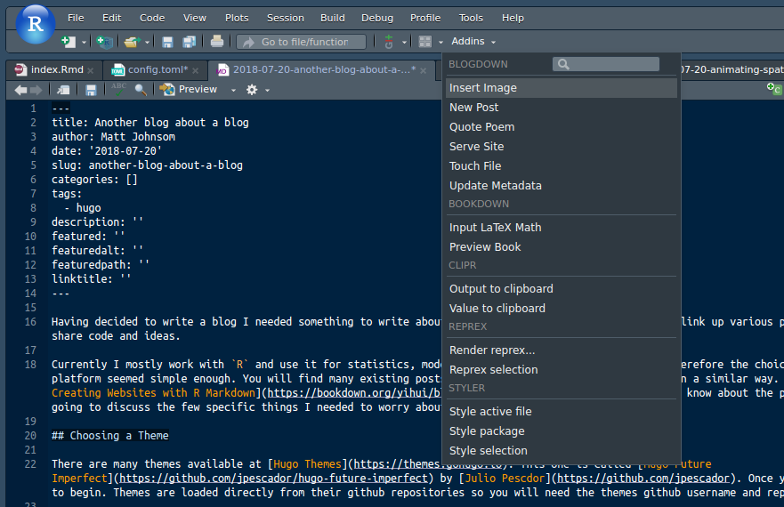

Currently I mostly work with R and use it for statistics, modelling, GIS and web / pdf based reporting. Therefore the choice of Blogdown seemed simple enough. You will find many existing posts about others setting up their blogs in a similar way. Further, the book blogdown: Creating Websites with R Markdown by Yihui Xie et al. covers everything you need to know about the process. Here, I am only going to discuss the few specific issues I had to deal with to get started.
Choosing a Theme and Installing
There are many themes available at Hugo Themes. This one is called Hugo Future Imperfect by Julio Pescdor. Once you have chosen it is time to begin. Themes are loaded directly from their Github repositories so you will need the themes Github username and repository name.
install.packages("blogdown")
blogdown::install_hugo()
blogdown::new_site(theme = "jpescador/hugo-future-imperfect")
Now everything is up an running but it is easier to test everything if you have some content. The Blogdown package includes a series of addins that makes this process simple, just select New Post from the Addins menu.

Configuring the Site
With some simple content generated use blogdown:::serve_site() to preview your site. At this stage it will not look exactly as you expected. Each theme has a config.toml that is used to setup each site. Most themes will have detailed instructions or an example project for your reference. This file is quite readable so you can just scan through and copy the settings you need.
Be sure to read any documentation that comes with the theme as they are all different and may have some simple gotchas. Here the CSS files did not want to load until I found that I had to add the setting relativeURLs = true. Also play around with all the settings in the config.toml file just so you know what they do.
Deploying
Hugo generates static sites so there are many deployment options. The simplest is to run blogdown::build_site() and then copy the contents of the public folder to your hosting service. I won’t go though them as the blogdown book mentioned above goes into great detail.
As I am too cheap to pay for a hosting service and want to make use of my Github pages URL I decided (against the suggestions in the book) to use Github and Travis. After referring to the blogdown book for instructions. The only difficulty was linking the Github repository with Travis with permissions to write back to the repository. This post contained all the details necessary for setting an environment variable in Travis.
This worked nicely BUT…
Actually Deploying
When Travis builds the site it runs blogdown::build_site() just as you would on your computer. Now if you have an .Rmd post that uses R packages, they are installed on your computer but they are not on Travis. Travis can be configured to install the packages, but you would have to do this each time you add use a new package. I intend to experiment with a lot of different packages and this seems like a lot of effort when you can simply build the site locally and move the static files.
After several dead-ends and messing around with folder names to appease the Github gods (who were not appeased), I came across instructions on the GoHugo website. This involved creating 2 repositories one called blog and the other <USER>.github.io and then setting up the public folder of blog as a git sub-module that commits to <USER>.github.io.
The only drawback is that if you use the git GUI in RStudio the sub-module does not commit. But this is likely user error as my knowledge of git is limited. For now I am using the terminal to push changes in the public folder.
# run once
git submodule add -b master git@github.com:mrjoh3/mrjoh3.github.io.git public
cd public
git pull
# after updates
git add .
git commit -m 'some message'
git push origin master
Lessons Learnt
Blogdown has been fantastic, I had a site up and running within an hour. And this included install dependancies finding a theme and understanding the config.toml file. Even with complication I only spent 3 hours getting my deployment sorted.
What I should have done from the beginning is think more about my own needs and requirements. All of the instructions for the different services were all clear and worked as expected. That they sometimes did not meet my needs reflects more on my preparation.
Share this post
Twitter
Google+
Facebook
Reddit
LinkedIn
StumbleUpon
Pinterest
Email